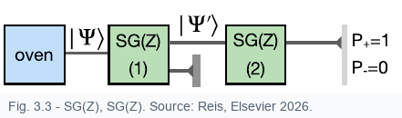

Probabilities predict distributions of results. Expectation values summarize the average result over many identically prepared systems, while variance measures how spread out those results are.
If \(a_n\) are possible values with probabilities \(P_n\), the average value is
Using \(P_n=|\langle n|\Psi\rangle|^2\) and the spectral decomposition of \(\hat A\), this becomes
The compact formula is not magic; it is the weighted average written in vector language.
The spread of possible measurement results is
If a state is an eigenstate of \(\hat A\), repeated measurements of \(A\) give the same value and the variance is zero.

If the first SG(Z) device blocks the \(-\) beam, the transmitted state is no longer the original superposition. The prepared state is
A second SG(Z) measurement is then certain:
After a definite result is selected, the state is projected into the corresponding eigenstate. The apparatus does not merely reveal a number; it prepares the state used by the next apparatus.